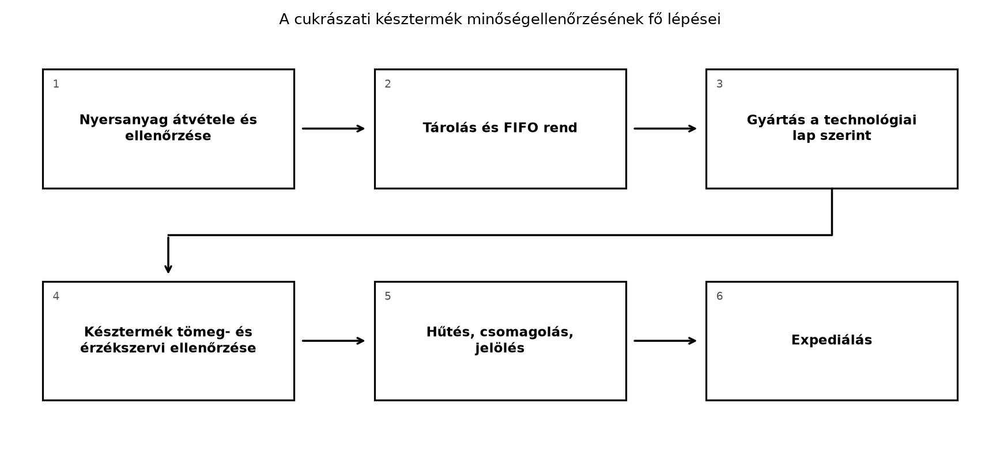

A cukrászüzemben a reggeli átadás vagy a délelőtti pultfeltöltés előtt a késztermékeket nem elég megkóstolni. A vendég nem kaphat a jelöltnél kisebb szeletet, a hatósági ellenőr pedig mérheti a krémesek, tortaszeletek tömegét. A minőségellenőrzés nem utólagos kóstolgatás, hanem tervszerű, dokumentált tevékenység: a tömeg mérése, az érzékszervi tulajdonságok pontozása és a hibák okainak feltárása. Ebben az alfejezetben azt tanulod meg, hogyan állapítsd meg, hogy egy cukrászati termék megfelel-e a technológiai lapnak, a jelölésnek és a vendég elvárásának.
A cukrászati termék minőségét nem egyetlen pillanatban, hanem a teljes termékúton ellenőrizzük: a nyersanyag-átvételtől az expediálásig. A következő folyamatábra a legfontosabb ellenőrzési pontokat mutatja.

A lépések közül ebben az alfejezetben a késztermék-ellenőrzést járjuk körül: mit mérünk, hogyan pontozunk, és mit kezdünk az eltérésekkel. Az 1. számítási példa ábrájának online változatában (tömegellenőrző kalkulátor) megadhatod 5–10 minta tömegét, az előírt tömeget és a tűrést; a kalkulátor kiszámolja az átlagot, a legnagyobb eltérést és a százalékos eltérést.
Definíció. A cukrászati készítmény minősége azoknak a tulajdonságoknak az összessége, amelyek a terméket a fogyasztó számára élvezetessé, biztonságossá és a technológiai előírásnak megfelelővé teszik. A minőség nem szubjektív vélemény, hanem mérhető és érzékszervileg értékelhető jellemzők együttese.
A cukrászati minőség négy fő összetevője:
(ellenőrizendő: 1169/2011/EU rendelet hatályos követelményei).(ellenőrizendő: hatályos útmutató a fogyaszthatósági és minőségmegőrzési időről).Szabály. A minőségellenőrzés akkor értelmes, ha a vizsgált jellemzőhöz viszonyítási alap tartozik: a technológiai lapon rögzített tömeg, forma, felület, metszet, íz és állag. A technológiai lapot a Cukrászati termékcsoportok, megnevezések és a technológiai lap alfejezetben ismertük meg.
Öt tényező határozza meg, hogy a késztermék milyen minőségű lesz:
(ellenőrizendő: 1935/2004/EK rendelet követelményei).Megjegyzés. A minőség és az élelmiszerbiztonság nem ugyanaz. Egy termék lehet tökéletesen biztonságos, de minőségi hibás (például repedt a tükörbevonó). Fordítva: lehet szép, de mikrobiológiailag kockázatos (például nem hűtött krémes).
Definíció. A tömegellenőrzés során a késztermék nettó tömegét mérjük, és összehasonlítjuk a technológiai lapon vagy a jelölésen szereplő alapmennyiséggel. Az eltérés a mért tömeg és az előírt tömeg különbsége.
A gyakorlatban nem egyetlen szeletet mérünk, hanem mintát veszünk, és kiszámítjuk az átlagot:
ahol az egyes minták tömege (g), a minta darabszáma, a minta átlagtömege (g).
Az eltérés:
A százalékos eltérés:
Szabály. A megengedett eltérést (tűrést) a
termékcsoportra, a technológiai lapra és a hatósági előírásokra
figyelemmel kell meghatározni. A tűréshatár nem általános állandó, ezért
konkrét százalékot csak tanulási példaként adunk meg
(ellenőrizendő: hatályos fogyasztóvédelmi előírások és Magyar Élelmiszerkönyv-előírások).
Jogszabály. Az előre csomagolt élelmiszereknél a
fogyasztók élelmiszerekkel kapcsolatos tájékoztatásáról szóló
1169/2011/EU rendelet a nettó mennyiség feltüntetését írja elő, és a
jelölt tömegtől való jelentős eltérés megtévesztő gyakorlat lehet
(ellenőrizendő: pontos jogszabályhely és tűréshatár). A
pultból kiszolgált, darabra árult (nem előre csomagolt) terméknél nincs
kötelező „jelölt nettó tömeg”: itt a technológiai lap tömege belső
minőségi követelmény, és ha a tömeget feltüntetjük (például az árlapon),
annak valósnak kell lennie
(ellenőrizendő: fogyasztóvédelmi szabályok). A
cukrászüzemben ezért belső szabályzatot érdemes készíteni a mérési
gyakoriságról és az elfogadható eltérésről.
Adott: A technológiai lap szerint egy krémes szelet nettó tömege legyen. A reggeli ellenőrzés során kiválasztunk 5 szeletet, és megmérjük őket:
| Minta sorszáma | Tömeg (g) |
|---|---|
| 1. | 118 |
| 2. | 121 |
| 3. | 119 |
| 4. | 117 |
| 5. | 120 |
Keresett: az átlagtömeg, a legnagyobb eltérés és a százalékos eltérés a legrosszabb mintán.
Megoldás:
Az átlag:
Az eltérések:
A legnagyobb abszolút eltérés a 4. mintánál van: .
A százalékos eltérés a 4. mintán:
Értékelés. Ha a belső szabályzat például
tűrést enged (ellenőrizendő: ez csak tanulási példa), akkor
a
eltérés elfogadható. Az átlag
,
ami
-kal
kisebb az előírtnál, így a tétel megfelel. Ennek ellenére érdemes
ellenőrizni, miért tér lefelé: lehet, hogy a krémadagoló kisebb adagot
ad, vagy a tészta sütési vesztesége nagyobb.
Adott: Egy bíráló a krémesre az alábbi pontokat adja egy 1–5-ös skálán, ahol 5 a legjobb:
| Szempont | Pontszám | Súly (%) |
|---|---|---|
| Forma | 4 | 15 |
| Szín | 5 | 10 |
| Állag | 3 | 25 |
| Íz | 4 | 40 |
| Illat | 4 | 10 |
Keresett: a súlyozott átlagpontszám.
Megoldás:
A súlyozott átlag:
A számláló:
Összeg:
A nevező:
Értékelés. A súlyozott pontszám , ami jó, de nem kiváló. Az állag 3 pontja lehúzza az átlagot: elképzelhető, hogy a krém kissé lágy, vagy a tészta nedves. Az érzékszervi minősítésben a súlyozás azt fejezi ki, hogy a fogyasztó számára általában az íz és az állag fontosabb, mint a forma vagy a szín.
Definíció. Az érzékszervi bírálat olyan vizsgálat, amelyben a bíráló érzékszerveivel (látás, szaglás, ízlelés, tapintás, hallás) értékeli a terméket, és az eredményt pontszámokkal rögzíti.
A cukrászüzemi gyakorlatban a leggyakrabban hat szempontot értékelünk:
Példa pontozólapra. Egy lehetséges egyszerű pontozólap a vizsgafeladathoz:
| Termék neve | Dátum | Bíráló | Forma (1–5) | Szín (1–5) | Felület (1–5) | Metszet (1–5) | Íz/illat (1–5) | Állag (1–5) | Összpontszám (max. 30) |
|---|---|---|---|---|---|---|---|---|---|
| Krémes | 2025. 02. 20. | A. bíráló | 4 | 5 | 3 | 3 | 4 | 3 | 22 |
A vizsgán gyakran nem súlyozott, hanem egyenlő súlyú pontozást kérnek, de a súlyozott módszert is ismerni kell.
Szabály. Az érzékszervi bírálathoz mindig friss, megfelelő hőmérsékletű mintát használjunk. A kóstolás előtt a bíráló ne dohányozzon, ne fogyasszon erős fűszeres ételt, lehetőség szerint vízzel öblítse a száját. A krémes, tejszínes termékeket csak hűtött, biztonságos állapotban kóstoljuk.
A termékhibákat tünet, ok, megelőzés és javítás szerint gyűjtjük. A következő táblázat a leggyakoribb hibákat mutatja be.
| Hibajelenség | Lehetséges ok | Megelőzés | Javítás / selejtezés |
|---|---|---|---|
| A krémes tésztája nem leveles, hanem tömör | A hajtogatott tészta túl meleg volt, a vaj beleolvadt | Hideg helyiségben dolgozz, a vajat és a tésztát pihentesd | A kész tészta nem javítható; új tétel készül |
| A krémes krémje folyik | Kevés zselatin, rövid dermesztés, meleg tároló | Pontosan mérj, dermeszd 0–4 °C-on, hűtve tárold | A folyékony krémes tételt ki kell vonni a forgalomból, és hűtve kell vizsgálni; ha a hőmérséklet vagy a szerkezet nem biztonságos, selejtezni kell |
| A tükörbevonó fénytelen, csíkos | A zselatin nem oldódott ki, a bevonó túl hideg vagy túl meleg | A zselatint alaposan duzzaszd és oldd, a bevonót előírt hőfokon használd | A hibás bevonat lekaparható és újraönthető, ha a tészta és a krém sértetlen |
| A piskóta lapos, szalonnás | A tojáshab nem volt elég kemény, a lisztet túl erősen kevertük be | A tojáshabot keményre verjük, a lisztet óvatosan, fakanállal forgatjuk | A lapos piskóta nem javítható, de kockákra vágva pohárkrémbe vagy Somlói galuskába felhasználható |
| A csokoládé szürkés, matt | Nem megfelelő temperálás, a bevonat túl lassan hűlt | Tartsd a temperálási görbét, hűtsd 12–14 °C-on
(ellenőrizendő: gyártói adatlap) |
Visszaolvasztva és újratemperálva felhasználható, ha nem szennyezett |
| A tortaszelet tömege kisebb a jelöltnél | A szeletelő nem pontosan adagol, a krém mennyisége kevesebb | Ellenőrizd a szeletelő sablont, mérj mintát a sorozat elején | A kisebb szeleteket ne értékesítsd; a következő szeleteknél korrigálj |
| Idegen szag, savanykás íz | Nem megfelelő hűtés, túl hosszú tárolás, szennyeződés | Tartsd a hűtési láncot, tartsd be a fogyaszthatósági időt | Az ilyen terméket azonnal ki kell vonni a forgalomból, és a HACCP szerint dokumentálni kell |
A következő képtábla a táblázat néhány hibáját a jó minta mellett, sematikus metszet- és felületrajzon mutatja.
Megjegyzés. A hibakatalógus élő dokumentum: a tanulónak és a cukrásznak érdemes saját, a saját termékeire szabott listát vezetnie.
Cél. A tanuló végezzen tömegellenőrzést és érzékszervi pontozást egy krémes mintán, majd értékelje az eredményt a belső tűrés szerint.
Eszközök és anyagok. Digitális mérleg (0,1 g pontosság), vonalzó vagy tolómérő, vágódeszka, kés, pontozólap, toll, hűtött krémes minták (legalább 5 db), víz a szájöblítéshez.
Higiéniai munkakezdés. Munkaruha, hajháló, ékszer nélkül, kézmosás. A munkafelületet tisztítsd le. A mérleget tiszta, száraz, rezgésmentes helyre helyezd. A mintákat hűtőből közvetlenül a mérés előtt vedd ki, hogy elkerüld a felmelegedést.
Lépések:
(ellenőrizendő: saját receptúra).Ellenőrzési pontok:
Dokumentálás. A tömegmérési jegyzőkönyv és a
pontozólap a termékdokumentáció része. A vizsgafeladaton a pontozólapot
a vizsgáztató aláírja
(ellenőrizendő: a vizsgaszervezet aktuális űrlapja).
Biztonsági korlát. A kóstolás csak biztonságos, hűtve tárolt termékből történjen. Ha a termék hőmérséklete nem megfelelő, vagy a tárolási idő bizonytalan, ne kóstold meg.
Tünet. A reggeli ellenőrzéskor a krémes szelet tömegét -nak mérjük, ami -mal kisebb az előírt -nál. A szelet felülete nedves, a krém a vágásfelületen kissé folyik.
Hipotézis. Lehet, hogy a krém nem dermedt meg eléggé, ezért a tömeg egy része a csomagolóanyagra vagy a tálcára került. Lehet, hogy a krém kevesebb zselatint tartalmaz, vagy a dermesztési idő rövid volt.
Ellenőrzés. Megmérjük a hűtőben tárolt többi krémes
hőmérsékletét (infrahőmérővel vagy szúrópróba szerint
(ellenőrizendő: a mérés módja)). Ellenőrizzük a krém
állagát: kanállal vagy ujjal benyomva a krémnek rugalmasnak, de nem
folyósnak kell lennie. Megnézzük a krém receptúráját: a zselatin adagja
a technológiai lap szerint
(ellenőrizendő: saját receptúra).
Ok. A dermesztési idő rövid volt, a krém nem érte el a megfelelő szerkezetet, és a tömeg egy része a csomagolóanyagon maradt. A kisebb tömeg tehát nemcsak technológiai, hanem élelmiszerbiztonsági kérdés is: a lassan dermedő, langyos krémben a mikrobák gyorsabban szaporodhatnak, ezért a dermedés előtt is fontos a hőmérséklet ellenőrzése.
Javítás. A tételt azonnal ki kell vonni a
forgalomból. Ha a naplózott maghőmérséklet végig a kritikus határon
belül maradt, és csak a dermedés késett, a tételt hűtve visszatartjuk,
és csak minőségi bírálat után, a HACCP-tervben rögzített helyesbítésként
értékesíthető
(ellenőrizendő: HACCP-terv, hatályos útmutató). Ha a
hőmérséklet a kritikus határ fölé emelkedett, vagy nem tudjuk, mennyi
ideig, a tételt selejtezni kell; a meglágyult vagy megfolyt krémes
visszahűtéssel nem tehető újra értékesíthetővé (lásd az Expediálás, csomagolás, szállítás, tárolás és üzleti
árukezelés alfejezet szabályait).
Megelőzés. A krém dermedési idejét és hőmérsékletét mindig rögzítsük, és ne szeleteljük a krémeseket a teljes dermedés előtt. A tömegellenőrzést a sorozat elején és közben is végezzük el.
A hatósági (fogyasztóvédelmi) ellenőr bejelentés nélkül érkezik a
cukrászdába. A cukrászda a krémes szeleteket előre csomagolva, címkével,
jelölt nettó tömeggel árulja. Az ellenőr kiválaszt három darab csomagolt
szeletet, és megméri a tömegüket. A szeletek
,
és
tömegűek, átlaguk
,
vagyis az átlagos hiány
().
Az ellenőr jegyzőkönyvet vesz fel, és felszólítja az üzletvezetőt, hogy
vizsgálja meg a tömegeltérést
(ellenőrizendő: a hatósági mérés módja és a megengedett eltérés).
Az üzletvezető utólag megnézi a technológiai lapot: a krém és a tészta aránya alapján a számított nettó tömeg lenne, de a krémadagoló gép beállítása időközben elállt, ezért a szeletekbe átlagosan -mal kevesebb krém került. A hibát az okozta, hogy a gép karbantartását nem végezték el időben, és a napi mérési jegyzőkönyvet sem vezették.
A tanulság: a tömegellenőrzés nem felesleges adminisztráció. Ha a napi minta mérése megtörtént volna, a hibát még azelőtt észlelik, hogy a hatóság mér. A dokumentált mérés a vállalkozást is védi, mert bizonyítja az önellenőrzést.
1. feladat (A) Fogalmazd meg, mi a különbség a tápérték és az élvezeti érték között. Adj egy példát arra, amikor egy termék tápértéke megfelelő, de az élvezeti értéke rossz.
2. feladat (A) Egy tortaszelet jelölt tömege . Megmérünk 6 darabot: , , , , , . Számold ki az átlagot, a legnagyobb eltérést és a százalékos eltérést a legrosszabb mintán.
3. feladat (B) Egy érzékszervi bírálaton három bíráló az alábbi pontokat adja egy minyonra (max. 5 pont szempontonként):
| Szempont | 1. bíráló | 2. bíráló | 3. bíráló |
|---|---|---|---|
| Forma | 4 | 5 | 4 |
| Szín | 5 | 4 | 5 |
| Felület | 3 | 4 | 3 |
| Metszet | 4 | 4 | 5 |
| Íz/illat | 4 | 3 | 4 |
| Állag | 3 | 3 | 4 |
Számold ki szempontonként az átlagot, majd az összpontszámot (max. 30). Melyik szempont a leggyengébb?
4. feladat (B) Egy cukrászda belső szabályzata szerint a krémeseknél a nettó tömeg tűrése . A jelölt tömeg . Melyik minta felel meg: , , , ? Indokold!
5. feladat (C) Egy vendég reklamál, hogy a krémes szelet kisebb, mint a szomszédos pultban. Az üzletvezető megmér 5 szeletet: , , , , . A jelölt tömeg , a belső tűrés . Milyen hibákat tárhat fel az adat? Mit kellene ellenőriznie a gyártási naplóban?
6. feladat (D) Készítsd el otthon vagy a tanműhelyben a Krémesek: vajas/leveles és forrázott tésztából alfejezetben tanult krémes szeleteket. Végezd el a fenti gyakorlati útmutató szerint a tömegellenőrzést és az érzékszervi pontozást. Töltsd ki a pontozólapot, és írd le, milyen hibát tapasztaltál, milyen okot azonosítottál, és mit javítanál a következő gyártásnál.
Önellenőrzés – válaszok
1. feladat (A) megoldása. A tápérték a tápanyagtartalom (energia, fehérje, zsír, szénhidrát), az élvezeti érték az érzékszervi élmény (íz, illat, állag). Példa: egy jól sikerült, magas tápértékű piskóta lehet száraz és ízetlen, ha túl sokáig sütötték, vagy kevés a cukor.
2. feladat (A) megoldása. Átlag: . Eltérések: , , , , , . Legnagyobb abszolút eltérés a 4. mintánál. Százalékos eltérés: .
3. feladat (B) megoldása. Szempontonkénti átlagok: Forma ; Szín ; Felület ; Metszet ; Íz/illat ; Állag . Összeg: pont. Leggyengébb a felület és az állag (3,33).
4. feladat (B) megoldása. A tűrés a -ra: , tehát az elfogadható tartomány és között van. A minták közül túl kicsi, túl nagy, megfelel, megfelel. Tehát és felel meg.
5. feladat (C) megoldása. Az átlag: , ami -mal kisebb a jelöltnél. A százalékos eltérés , ami a -os tűrésen belül van, de a trend lefelé mutat. Ellenőrizni kell a krémadagoló gép beállítását, a krém receptúráját, a tészta sütési veszteségét, és azt, hogy a csomagolás nem szívta-e magába a nedvességet. A gyártási naplóban meg kell nézni, hány adagot készítettek, milyen hőfokon sütöttek, és volt-e mérés a sorozat közben.
6. feladat (D) megoldása. A gyakorlati feladat értékelése a tanuló által kitöltött pontozólap és a mérési jegyzőkönyv alapján történik. A várt eredmény: a tanuló képes elvégezni a mérést, kiszámolni az átlagot és az eltérést, és az érzékszervi bírálatot pontozni. A hibaelemzésnél a tanulónak legalább egy okot azonosítania kell a technológiai lapra visszavezetve.
A cukrászati készítmény minősége négy összetevőre épül: tápérték,
élvezeti érték, tetszetősség és eltarthatóság. A minőséget öt tényező
határozza meg: a nyersanyag, a gyártásmenet, a csomagolás, a tárolás és
az árukezelés. A tömegellenőrzés során mintát veszünk, kiszámoljuk az
átlagot, az eltérést és a százalékos eltérést, majd összehasonlítjuk a
technológiai lapon rögzített tömeggel és a belső tűréssel. A tűréshatár
szabályozott, ezért mindig a hatályos előírásokhoz kell igazítani
(ellenőrizendő). Az érzékszervi bírálat pontozással
értékeli a formát, színt, felületet, metszetet, ízt/illatot és állagot;
a súlyozott átlag kifejezi a szempontok fontosságát. A hibakatalógus a
tünet, ok, megelőzés, javítás szerkezetben segít a termékhibák
elemzésében. A folyó krémes, a tömör leveles tészta, a fénytelen bevonat
mind visszavezethető technológiai okra. Továbbvitt
eredmény. Az itt tanult tömegellenőrzési és érzékszervi
pontozási módszert a vizsgafelkészülés során a Minőségbiztosítási rendszerek, nyomon követhetőség és
termékvisszahívás és a A szakmai vizsga
felépítése és a gyakorlati vizsgafeladat tervezése alfejezetekben
használjuk fel. A pontozólap kitöltése és az eltérés értékelése a
vizsgafeladat része lehet.